This document provides an overview of language-specific annotation conventions for Elamite used in Oracc.
A very few signs may be split in the middle; these are annotated
using the ATF @d ("divided") notation as follows:
| ANŠE | _ansze@d_ |
| NUMUN | _numun@d_ |
| GEŠTIN | _gesztin@d_ |
A new notation has been added to ATF to support splitting words over lines. We call the first part of the split word the head, and the following parts the continuations; a split word may be written over several lines, and thus may have multiple continuations.
A split word head always ends with the character sequence
-; (hyphen semi-colon), even if the split occurs before a
determinative. A split word continuation always begins with a hyphen,
even if the split occurs before a determinative. A split word
continuation which is not the final element in the chain always ends
with -;.
1. a-; 2. -ba-; 3. -am3
Any structural labels are permitted between the lines containing split words.
In general Elamite numbers are notated in the CDLI style as 1(u) 1(disz), etc.
Several unusual signs are used for certain numbers, and these are
annotated using the ATF @v ("variant") notation; in this
case, the variation is relative to the normal Sumero-Akkadian
cuneiform practice rather than implying variation within Elamite
practice.
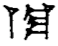 | 1/3(disz)@v | 1/3 |
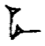 | 1/2(disz) | 1/2 |
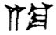 | 2/3(disz)@v | 2/3 |
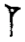 | 1(disz) | 1 |
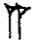 | 2(disz) | 2 |
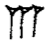 | 3(disz) | 3 |
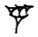 | 4(disz)@v | 4 |
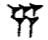 | 5(disz) | 5 |
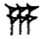 | 6(disz) | 6 |
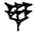 | 7(disz) | 7 |
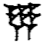 | 8(disz) | 8 |
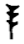 | 9(disz)@v | 9 |
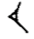 | 1(u) | 10 |
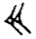 | 2(u) | 20 |
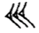 | 3(u) | 30 |
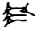 | 4(u)@v | 40 |
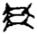 | 5(u)@v | 50 |
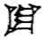 | 1(szu) | 60 |
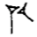 | 1(gesz2) 1(u) | 70 |
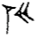 | 1(gesz2) 2(u) | 80 |
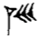 | 1(gesz2) 3(u) | 90 |
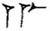 | 1(disz) _me_ | 100 |
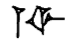 | 1(disz) _lim_ | 1000 |
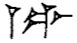 | 1(disz) _pi_ | 10000 |
In the last column are values in Borger ABZ; I have not yet checked Borger MZL to see if the not-in-list (nil) values are there.
dam0 = EL (nil) mak0 = KUR (nil) maz0 = MASZ2 maz2 muk0 = SAL muk3 muz0 = MUSZ (nil) rak0 = |SAL+BAR| (nil) ram0 = EL (nil) szab0 = "SZAB6" szab6 szap0 = "SZAB6" szap6 szib0 = ESZ (nil) szip0 = ESZ (nil) zik0 = ZAK (nil) zil0 = TAR zil3 zir0 = SZUD zir428 Jun 2013
Steve Tinney
Steve Tinney, 'ELX: Oracc Linguistic Annotation for Elamite', Oracc Documentation, Oracc, 2013 [http://oracc.museum.upenn.edu/doc/languages/elamite/]